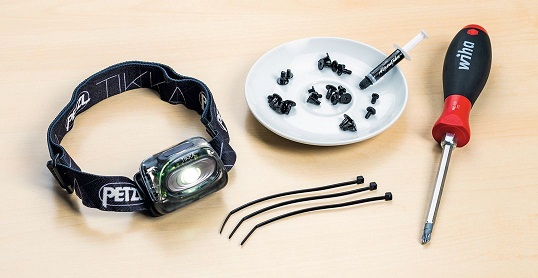
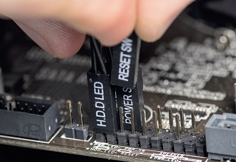
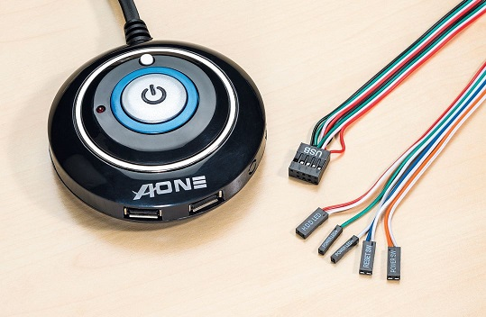
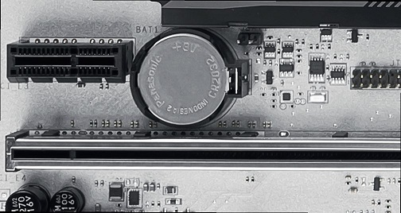
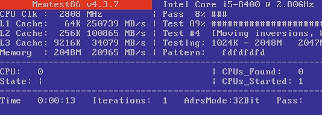
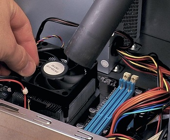

Ещё статьи
Ещё статьи
На обычных десктопахремонт дается легко. Простора в системном блоке достаточно, все компоненты заменяются, инструментов и подручных средств требуется немного.
Кроме крестовой отвертки PH2, особых инструментов не нужно. Полезные вспомогательные средства: налобный фонарик, блюдце для винтиков, кабельные стяжки и термопаста.
Прежде чем начать, в целях техники безопасности необходимо отсоединить разъем питания от розетки. Чтобы предотвратить электростатические разряды, которые могут причинить вред внутренним компонентам ПК, каждый раз прикасайтесь сначала к какой-либо металлической части корпуса и только потом — к остальным деталям. Перед тем, как достать новые детали из упаковки, обеспечивающей защиту от статического электричества, коснитесь батареи или крана.
Из всей процедуры ремонта ПК больше всего приходится ломать голову над причиной поломки, поскольку один и тот же симптом может проявляться при разных повреждениях. Так, если после включения ничего не происходит, дело может быть и в кнопке питания или перезагрузки, и в контактах материнской платы, с которыми те связаны, и в блоке питания.
Рекомендуется искать неполадки системно: 4 шага для проверки питания:
Проверьте исправность розетки, удлинителя и кабеля питания; убедитесь, что кабель правильно подключен к блоку питания ПК и что его переключатель находится в положении «Вкл».
Они должны быть расположены правильно, а штекеры должны быть исправны. Если штекеры питания на материнской плате оплавлены, значит, блок питания и материнская плата пострадали в результате скачка напряжения (например, во время грозы), а за ними, как правило, и процессор, и оперативная память, и другие компоненты — одним словом, произошло тотальное разрушение. Вместо ремонта предстоит собрать или купить новый компьютер.
Чтобы исключить вероятность короткого замыкания на кнопке Reset, отсоедините ее штекер от нижних контактов на материнской плате. Если после этого получилось включить ПК, так и оставьте кнопку Reset отсоединенной; если она когда-нибудь понадобится, нажмите и удерживайте несколько секунд кнопку включения для жесткого сброса, а потом еще раз нажмите для включения.
Компьютер может не включаться при неисправности кнопок Power или Reset. Переключая штекеры на материнской плате, вы сможете найти причину
Отсоедините и ее кабель от материнской платы, затем подключите компьютер к сети питания и проверьте, включается ли он, замыкая оба контакта Power Switch на материнской плате, например, канцелярской скрепкой. Если включается, значит, повреждена кнопка питания корпуса. Ее ремонт обычно не производится, а заменить целый корпус из-за нее одной будет очень дорого. Поэтому подключите штекер Reset Switch к контактам Power Switch на материнской плате — так вы сможете запускать компьютер нажатием кнопки Reset.
Если батарея на материнской плате разрядилась, последняя при каждом отключении от питания сбрасывает параметры BIOS
Следующие «подозреваемые» — блок питания и материнская плата. Блок питания легче заменить, поэтому начните с него. Найдите сменный блок питания, новый или от другого ПК, для проверки. Отсоедините все коннекторы, которые ведут от блока питания к материнской плате (24-контактный основного питания и 12-вольтный питания процессора), к накопителям SATA и видеокарте. Открутите четыре винтика на задней панели корпуса, которые удерживают блок питания, и извлеките его через боковое отверстие. Установите новый блок питания.
Если вентиляторы ПК крутятся и светодиодные индикаторы горят, а операционная система не загружается, тому могут быть тоже разные причины. Если после каждого отключения материнской платы от питания при включении приходит уведомление, что параметры BIOS были сброшены — возможно, разрядилась батарейка-таблетка на материнской плате. Она нужна для хранения параметров BIOS, когда на материнскую плату не подается питание. Батарейка легко отжимается и заменяется на новую той же модели.
Далее проверяйте ПК, следуя пункту «Если ноутбук не загружается» в нашей статей о ремонте ноутбуков. Кроме того, убедитесь, что исправны кабели питания, передачи сигнала к монитору и собственно монитор (подключив его к другому компьютеру), а также разные выходы компьютера — например, используется ли разъем HDMI вместо «мертвого» DVI-выхода. Еще можно снять видеокарту и попробовать интегрированную (если есть) или другую, сменную графику.
Инструмент Memtest86 загружается с USB-флешки. Для выявления неисправности проверьте каждый модуль RAM по отдельности.
Очень коварны неисправности оперативной памяти, потому что после ее сбоев едва ли можно восстановиться. Диагностировать проблемы оперативной памяти можно следующим образом: отсоедините все модули, кроме одного, и загрузите компьютер с USB-флешки с инструментом Memtest86, который запустит подробную проверку «оперативки».
Если тестирование пройдет гладко, внизу отобразится запись «Pass complete, no errors, press Esc to exit». Прогон может продолжаться часами, и тут все зависит от поколения процессора и оперативной памяти. По завершении начинается следующий прогон. Проверьте каждый модуль RAM по отдельности, и если выявится неполадка на одном из них, то замените его на такой же.
Если на кулере процессора скопилась пыль, вытяните ее пылесосом, удерживая вентилятор.
В отличие от ноутбуков, кулеры ПК обычно не демонтируют: благодаря большим лопастям чаще всего бывает достаточно вытянуть пыль пылесосом, удерживая вентилятор от вращения. Если же сквозь отверстия блока питания видно, что внутри очень пыльно, лучше всего его полностью заменить, и не только из-за сильного рабочего шума, но и из-за вероятности возгорания.
Прочие неисправности оборудования лучше всего попытаться обойти. Например, если поврежден аудиовыход, а ваш монитор оборудован динамиками и подключается по HDMI или DVI-D, то щелкните правой кнопкой по значку громкоговорителя на Панели задач и укажите для «Устройств воспроизведения» монитор.
8 800 555 35 35
support@krytipc.com
Домашняя страница
О крути пк.сом
Прайсы на ремонт
Работа
Обработка данных
Купить пк
Сообщить о баге
Отзывы
Справка
Почистить ПК
на этот заголовок не хватило бюджета
©2024 Компания «Крути ПК.сом» не несёт ответственность за возгорание вашего компьютера после ремонта